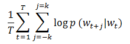
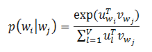

Word2Vector
Word2Vector将词转换成分布式向量。分布式表示的主要优势是相似的词在向量空间距离较近，这使我们更容易泛化新的模式并且使模型估计更加健壮。 分布式的向量表示在许多自然语言处理应用（如命名实体识别、消歧、词法分析、机器翻译）中非常有用。 ## 模型
在MLlib中，Word2Vector使用skip-gram模型来实现。skip-gram的训练目标是学习词向量表示，这个表示可以很好的预测它在相同句子中的上下文。数学上，给定训练词w_1,w_2,...,w_T， skip-gram模型的目标是最大化下面的平均对数似然。

其中k是训练窗口的大小。在skip-gram模型中，每个词w和两个向量u_w和v_w相关联，这两个向量分别表示词和上下文。正确地预测给定词w_j的条件下w_i的概率使用softmax模型。

其中V表示词汇数量。在skip-gram模型中使用softmax是非常昂贵的，因为计算log p(w_i|w_j)与V是成比例的。为了加快Word2Vec的训练速度，MLlib使用了分层softmax,这样可以将计算的复杂度降低为O(log(V))。
实例
下面的例子展示了怎样加载文本数据、切分数据、构造Word2Vec实例、训练模型。最后，我们打印某个词的40个同义词。
1 | import org.apache.spark._ |
源码分析
由于涉及神经网络相关的知识，这里先不作分析，后续会补上。要更详细了解Word2Vector可以阅读文献【2】。
参考文献
【1】哈夫曼树与哈夫曼编码
Word2Vector